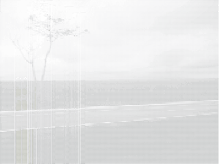
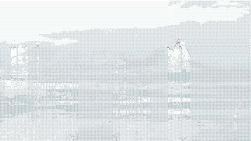
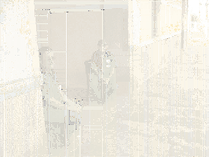
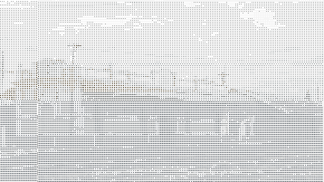
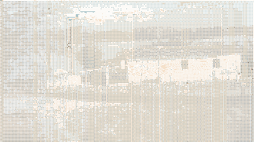
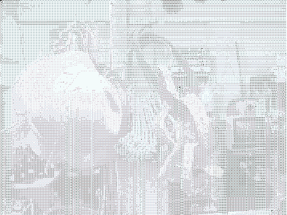

Next: O Fenômeno Shanzhai Up: mutsaz inverno pozimi Previous: Tricromia
| http://reacesso.webnos.org/2010/08/28/uma-reflexao-com-o-sertao-tecnologias-agua-e-invernos/http://tinyurl.com/2cwxw79 |
Agora no finalzinho de agosto saí de Cabedelo com destino a Sousa
com destino a Sousa para uma tarefa um tanto quanto estressante, porém extremamente necessária.
Prefiro não falar sobre ela mas sim sobre o objetivo paralelo, que
foi produzir este texto para o #mutsaz inverno.
para uma tarefa um tanto quanto estressante, porém extremamente necessária.
Prefiro não falar sobre ela mas sim sobre o objetivo paralelo, que
foi produzir este texto para o #mutsaz inverno.

Eu sabia que uma vez estando em Sousa, na pior das hipóteses teria uma tarde livre para dar uma volta pela cidade, ver coisas, conversar com as pessoas e assimilar um pouco desse sertão que não conheço em nada além da literatura e de um imaginário popular. A ideia era aproveitar esse tempo para refletir um pouco sobre ``local'' e tecnologia. Consciente porém de que ``local'' é sempre construção.
Não li nada sobre Sousa antes da viagem. Sabia da existência do Vale
dos Dinossauros , mas não era meu foco. Passei por lá rapidamente apenas para atender
a um desejo do meu filho e fiquei um pouco triste com o descaso que
vi. Sabia também que havia uma descoberta recente de petróleo na região,
mas não tive tempo de investigar o assunto.
, mas não era meu foco. Passei por lá rapidamente apenas para atender
a um desejo do meu filho e fiquei um pouco triste com o descaso que
vi. Sabia também que havia uma descoberta recente de petróleo na região,
mas não tive tempo de investigar o assunto.
São sete horas de viagem de ônibus para Sousa. Levei coisas para ler
e para ouvir, mas sempre acabo curtindo muito a paisagem. O dia estava
da cor que eu mais gosto, cinza, nublado, bonito demais pra começar
viagem rodoviária. Mas ao tentar fotografar este momento o que me
veio imediatamente à cabeça foi o imenso poder daquele mar verde ao
meu lado. Essencialmente cana-de-açúcar , até onde a vista alcança.
, até onde a vista alcança.

Muitas horas depois, já na região do Sertão, duas coisas me chamaram a atenção. Primeiro a paisagem, deslumbrante, bela, de uma beleza distinta da que estou acostumado no litoral. Fiquei imaginando como interagir com aquelas paisagens. Que tipo de descobertas e aprendizados estariam por ali para, com tempo, não apenas uma tarde mas alguns anos, serem vivenciados lenta e proveitosamente? A paisagem parecia me dizer ``aqui há possibilidades e aprendizados que você jamais imaginou. Conhecimentos e práticas cujos significados não lhe são minimamente apreensíveis no momento''.
Cheguei em Sousa já era noite e apenas dormi para comparecer ao meu compromisso na manhã do dia seguinte. À tarde, logo depois do almoço, comecei minha caminhada, acompanhado por um bom camarada que conheci pela manhã, o Léo. Alguns minutos à pé pelas ruas da cidade e chegamos no local que atiçou de imediato meu imaginário tecnológico, a estação ferroviária de Sousa. Pensei logo: ``Será que ainda há movimento de trens por aqui? De que tipo? De onde para onde?''

Fomos recebidos na estação pelo Sr. Valdemar, que conversou bastante conosco sobre a situação atual do transporte ferroviário na região, e o Sr. Manoel Nóbrega, funcionário antigo que ainda pegou na década de 80 do século passado o terminal funcionando para o embarque e desembarque de passageiros. Coisa que não ocorre mais atualmente. Por que será que o transporte ferroviário de passageiros foi desativado na região? Fiquei muito curioso para entender os motivos que levaram a isto, mesmo antecipadamente imaginando que tudo não passa de articulação política dos interesses corporativos. Não é difícil ver o cenário.

Ainda assim, nada posso afirmar. Pesquisando sobre a história e as
perspectivas da ferrovia no sertão encontrei o blog Estações Ferroviárias
da Paraíba com muito material para começar uma investigação sobre o assunto.
Fiquei só pensando em fazer a viagem, João Pessoa - Sousa,
de trem. Será que há justificativa plausível para a desativação desse
tipo de transporte neste caso específico? Porque a tecnologia não
serve mais? Segundo o Sr. Manoel os trens de passageiros que passavam
por ali eram os que faziam o percurso Fortaleza - Recife
e também Mossoró / RN. O Blog Estações Ferroviárias da Paraíba apresenta
mais alguns detalhes
com muito material para começar uma investigação sobre o assunto.
Fiquei só pensando em fazer a viagem, João Pessoa - Sousa,
de trem. Será que há justificativa plausível para a desativação desse
tipo de transporte neste caso específico? Porque a tecnologia não
serve mais? Segundo o Sr. Manoel os trens de passageiros que passavam
por ali eram os que faziam o percurso Fortaleza - Recife
e também Mossoró / RN. O Blog Estações Ferroviárias da Paraíba apresenta
mais alguns detalhes .
.
Minha reflexão tecnológica não parou na questão do transporte ferroviário.
Aliás, nem começou aí. Ainda na estrada uma imagem havia me chamado
a atenção. Vi pela primeira vez uma cisterna de aproveitamento de
água da chuva . E aí o pensamento foi a mil. Essas cisternas foram o primeiro exemplo
que eu ouvi de ``tecnologia social''.
Rapidamente lembrei que eu já vinha pensando em me dedicar um pouco
mais a vislumbrar possibilidades em torno dos WaterLabs
. E aí o pensamento foi a mil. Essas cisternas foram o primeiro exemplo
que eu ouvi de ``tecnologia social''.
Rapidamente lembrei que eu já vinha pensando em me dedicar um pouco
mais a vislumbrar possibilidades em torno dos WaterLabs . E então essa imagem e possibilidades não me saíram mais da cabeça
durante estes dias que estive em Sousa.
. E então essa imagem e possibilidades não me saíram mais da cabeça
durante estes dias que estive em Sousa.

Falar de água no sertão pode parecer meio cliché, mas... será? Antes de dizer qualquer coisa sobre água e tecnologia preciso de algumas investigações, mas, de qualquer forma, só o vislumbrar de uma possibilidade já me anima bastante. É que nessa estória de doutorado e as conversas em rede, talvez, por questão das restrições e limitações do trabalho acadêmico, eu esteja próximo a ter que escolher algum tipo de projeto para o centro das atenções. Estabelecer um projeto para poder seguir os atores e vê-los e descrever suas manifestações. Etnografia, essencialmente com as premissas da Actor-Network Theory.

Além das ferrovias e da água, outras questões tecnológicas surgiram na minha rápida interação com Sousa. Encontrei com um armazém que não é tão diferente das coisas que ainda posso encontrar na feira de Cabedelo. Mas alguns dos itens me chamaram a atenção. As celas, os artefatos de sola, as esporas, coisas de montaria, todos ali me transportando para uma viagem no tempo. Eu não imaginava que ainda se usavam esporas. Fiquei surpreso. Tão surpreso quanto encantando com as cores e utensílios do local, uma mistura das tradições com a contemporaneidade. Reflexão tecnológica pura! Celeiro de #MetaReciclagem. Agora fico no aguardo do retorno ao sertão em alguns meses. As expectativas prometem, e o tempo parece que vai ser bem maior.
Quanto ao inverno, aqui no litoral era comum eu ver minha vó e alguns
mais velhos se referindo a inverno como ``período
de chuvas, sem que isto tivesse qualquer relação com
período que é denominado de inverno aqui no Brasil. Parece que no
sertão não é diferente . Foi a primeira coisa que pensei quando em Sousa me falaram que as
chuvas importantes são as do final do ano e comecinho do outro, quando
elas acontecem (o que não é sempre) temos uma outra paisagem, um outro
sertão, por conta de um inverno em pleno verão.
. Foi a primeira coisa que pensei quando em Sousa me falaram que as
chuvas importantes são as do final do ano e comecinho do outro, quando
elas acontecem (o que não é sempre) temos uma outra paisagem, um outro
sertão, por conta de um inverno em pleno verão.
Felipe Fonseca 2010-09-24